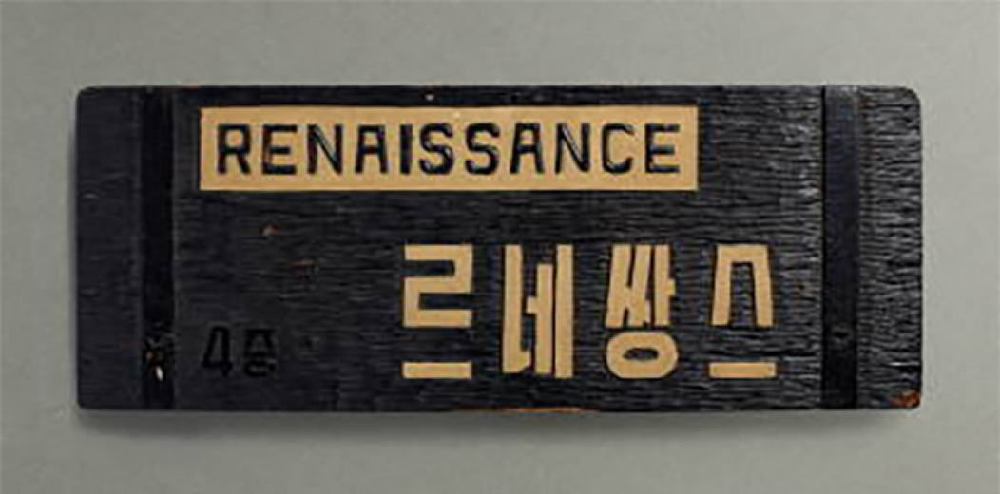
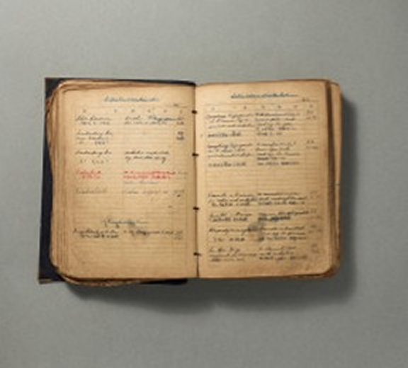
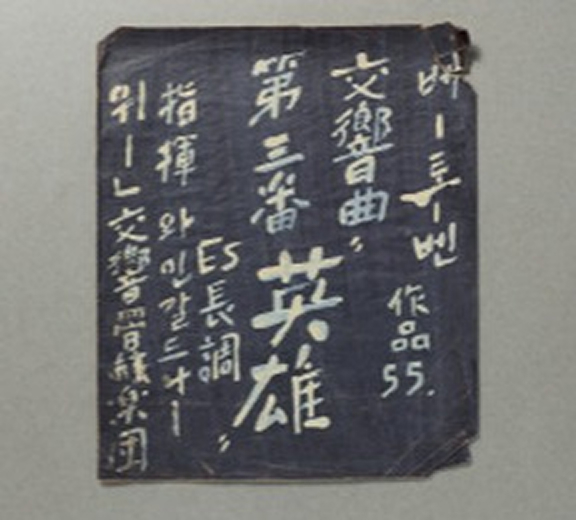
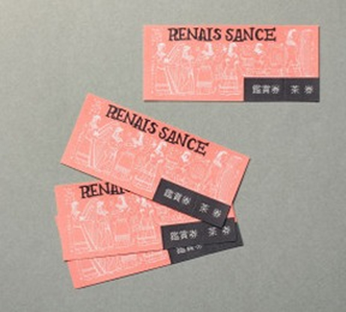
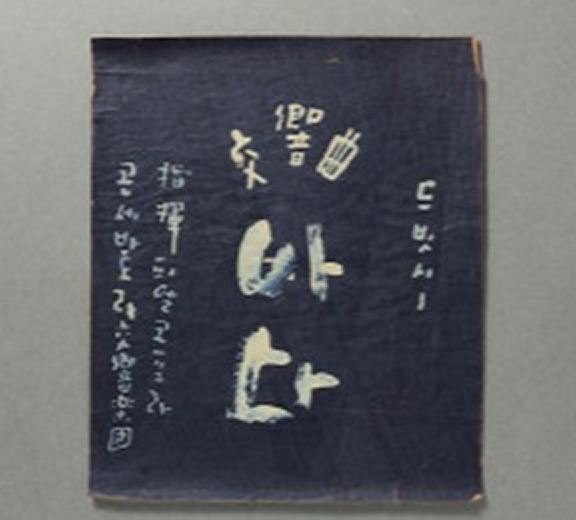
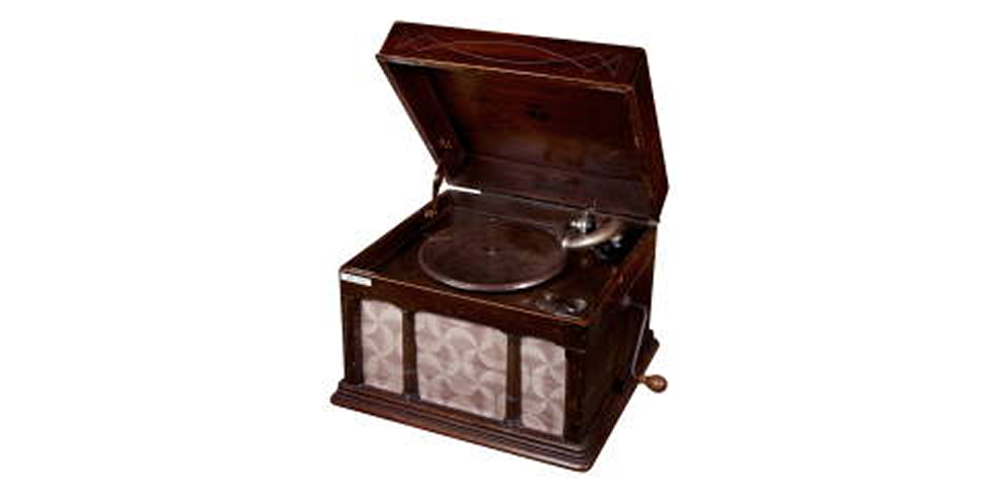

르네쌍스 컬렉션은 1951년부터 1987년까지 故박용찬 선생이 운영하던 음악 감상실 ‘르네쌍스’ 소장 음반과 음향기기 및 기타 기자재를 바탕으로, 20세기 후반 한국 음악 애호가들이 향유하던 감상 문화와 근·현대 음악사가 만나는 접점으로서의 가치에 주목하여 구축된 컬렉션입니다. 한국 유성기 음반 시리즈에는 20세기 초·중반 한국의 음반사와 공연예술사를 연구할 수 있는 자료들이 포함되어 있으나 재생 방식의 특성상 음원의 손상을 피하기 위해 잦은 물리적 재생을 피해야 하는 상태입니다. 아르코예술기록원에서는 자료의 보존과 활용을 위해 일부 음반을 디지털화하여 제공합니다.






<한국 유성기 음반 시리즈>는 한국예술디지털아카이브에서 디지털 음원과 이미지로 감상할 수 있습니다.